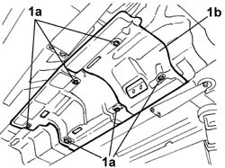

1076A48 Catalytic converter HEAT SHIELD - R.R.
- Path
- Procedures > 10 ENGINE > 1076 EXHAUST PIPES AND SILENCERS > 1076A exhaust pipe fastenings and protections > 1076A48 Catalytic converter HEAT SHIELD - R.R.
- Kind
- repair procedure (removal / refitting; the operation number is the code)
- Applies to
- engines: 3.0 V6, 3.2 V6; all production periods
- Interactive page
- https://sloeber94.github.io/elrnDB-lThss/en/#/75117
Applies to: engines: 3.0 V6, 3.2 V6; all production periods
 Removing
Removing
 Refitting
Refitting- Position the vehicle on a lift.
- Open the boot, remove the cover on the left hand side and disconnect the negative battery lead.
- Raise the vehicle
See in Op. 1080B62 CATALYTIC CONVERTER - R.R.
1. Undo the nuts (1a) fixing the two sections (1b) and (1c) of the catalytic converter heat shield and remove it.

Applies to: engines: 3.0 V6, 3.2 V6; all production periods
Refitting
Removing- Position the two sections of the heat shield and tighten the fixing nuts.
 | Value - daNm | Fastening | Component | Ø |
|---|---|---|---|---|
. | 0,8 | Nut | EXHAUST PIPE GUARDS | M6 |
See in Op. 1080B62 CATALYTIC CONVERTER - R.R.
- Lower the vehicle
- Connect the negative battery terminal and place the cover on the left hand side of the luggage compartment.
- Remove the vehicle from the lift.